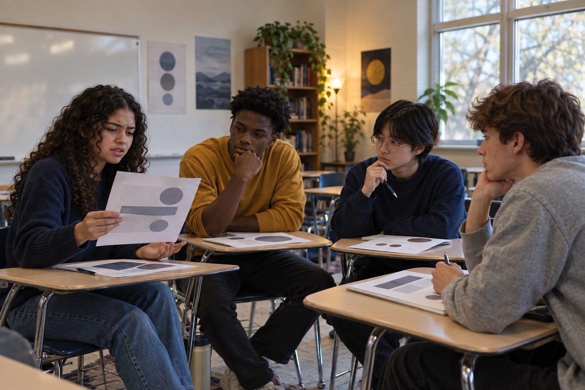

Aprendizaje estudiantil · Grados 9–12, Educación superior · 90 minutos
Estudio Humano + IA
Los estudiantes crean una obra breve con la IA como compañera de ideas, registran cada sugerencia que conservan, cambian o rechazan, y defienden sus decisiones humanas en una crítica de estudio.
La IA generativa puede producir un poema, el inicio de un cuento o el concepto de un póster en segundos, lo que plantea una pregunta real a los estudiantes creadores: ¿qué parte del trabajo es suya? En este estudio, los estudiantes crean una obra breve (una minificción de 150–250 palabras o el concepto de un diseño de una página) usando la IA solo como compañera de ideas que ofrece opciones, nunca como autora. Llevan un Registro de decisiones humanas con cada sugerencia de la IA y lo que decidieron hacer con ella, y luego defienden sus decisiones en una crítica de estudio en la que sus compañeros preguntan: “¿Por qué eso?”. La evidencia de aprendizaje no es la obra terminada, sino el rastro de decisiones que la hizo posible.
En este paquete
- Hoja A: Mazo de sugerencias de la IA (tarjetas para recortar)
- Hoja B: Registro de decisiones humanas (organizador)
- Hoja C: Rúbrica de la crítica de estudio (rúbrica)
Indicadores ELE de TCEA
- AI5.1 Sé cómo fomentar la colaboración entre las personas y los sistemas de IA.
- AI5.3 Soy consciente del potencial de la IA para ampliar la creatividad humana y la resolución de problemas.
- S5.2 Puedo usar la creatividad y la lógica para encontrar soluciones innovadoras.
- AI2.3 Soy consciente de la importancia de la transparencia y la rendición de cuentas en los sistemas de IA.
Guía completa para el facilitador: mglearn.github.io/eles/es/activities/human-ai-studio.html
Hoja A de Estudio Humano + IA
Mazo de sugerencias de la IA
Estas son sugerencias simuladas de una IA para la consigna “un momento en que algo común y corriente se volvió extraño”. Saca una cuando quieras una idea. Anótala en la Hoja B y decide: conservar, cambiar o rechazar.
Página 1 de 2
Idea
¿Y si la sombra de una persona empezara a llegar a los cuartos unos segundos antes que ella?
Idea
El timbre de la escuela suena a la hora de siempre, pero cada persona del edificio escucha una canción distinta.
Primera línea
“Todas las mañanas el autobús se detenía en la calle Juniper, pero hoy se detuvo en una calle que no aparecía en ningún mapa.”
Personaje
Un conserje del turno de noche que nota que la caja de objetos perdidos se está llenando poco a poco con cosas que todavía no se han perdido.
Giro
Lo extraño no le está pasando al mundo. Le está pasando al narrador, y todos los demás ya lo notaron, menos él.
Final
Termina con una acción cotidiana que ahora se siente distinta: alguien apaga una luz, y la oscuridad dura un momento de más.
Diseño
Concepto de póster: un objeto cotidiano (una llave, una cuchara, un tenis) mostrado muy grande, con un pequeño detalle que no pertenece ahí.
Diseño
Idea de color: una paleta tranquila y apagada de grises y beiges, con un elemento de un color brillante y antinatural.
Hoja A de Estudio Humano + IA
Mazo de sugerencias de la IA
Estas son sugerencias simuladas de una IA para la consigna “un momento en que algo común y corriente se volvió extraño”. Saca una cuando quieras una idea. Anótala en la Hoja B y decide: conservar, cambiar o rechazar.
Página 2 de 2
Pregunta
¿Qué quiere tu personaje antes de que ocurra lo extraño? ¿Cómo se interpone lo extraño en su camino?
Pregunta
¿Cuál de tus cinco sentidos notaría el cambio primero? Empieza por ahí.
Genérica
“De repente, todo cambió, y nada volvería a ser igual.”
Título
Opciones de título: “Jueves, un poco al revés” · “El tarareo” · “Perdido y aún no encontrado” · “El mapa no lo sabe”
Hoja B de Estudio Humano + IA
Registro de decisiones humanas
Anota cada sugerencia de la IA. Decisión: Conservar · Cambiar · Rechazar. La razón debe relacionarse con lo que TÚ quieres que logre tu obra. Escribe tu declaración de dos oraciones en el reverso.
| # | Lo que pedí (o la tarjeta que saqué) | Lo que sugirió la IA | Mi decisión (Conservar / Cambiar / Rechazar) | Por qué, según mi intención |
|---|---|---|---|---|
| 1 | ||||
| 2 | ||||
| 3 | ||||
| 4 | ||||
| 5 | ||||
| 6 | ||||
| Revisión después de la crítica |
Hoja C de Estudio Humano + IA
Rúbrica de la crítica de estudio
Califica la obra y el registro de un compañero. Agrega en el reverso un comentario cálido y uno frío.
| Criterio | Inicial | En desarrollo | Competente | Ejemplar |
|---|---|---|---|---|
| Autoría humana | La mayor parte de la obra es texto o imágenes de la IA usados tal cual. | El creador hizo algunos cambios, pero las sugerencias de la IA dirigen la obra. | La intención del creador da forma a la obra; las sugerencias de la IA están claramente adaptadas o seleccionadas. | Una voz o visión personal propia; las sugerencias de la IA se transforman o se rechazan con un propósito. |
| Registro de decisiones | Pocas entradas, sin razones. | Entradas con razones generales (“Me gustó”). | Cinco o más entradas con razones relacionadas con la intención, incluidos un rechazo y un cambio. | Las entradas muestran un patrón claro de criterio, y el creador puede decir qué aprendió sobre sus propias preferencias. |
| Defensa de las decisiones | No puede explicar sus decisiones. | Explica algunas decisiones, pero recurre a “la IA lo sugirió”. | Responde las preguntas de “¿Por qué eso?” con razones específicas. | Responde con razones y relaciona sus decisiones con el efecto en el lector o espectador. |
| Transparencia | No hay declaración. | Declaración vaga (“Usé IA”). | La declaración dice qué aportó la IA y qué decidió el creador. | Una declaración clara y específica que un lector podría usar para entender exactamente cómo se hizo la obra. |